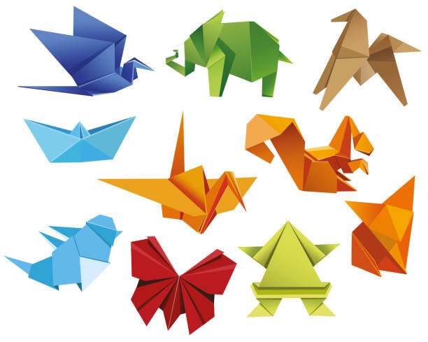

Origami
Origami is the art of folding objects out of paper to create both two-dimensional and three-dimensional subjects.
The word origami (from Japanese oru [“to fold”] and kami [“paper”]) has become the generic description of this art form,
although some European historians feel it places undue weight on the Japanese origins of an art that may well have
developed independently around the world.
Styles
Realistic: Creations that exhibit the main features of the subject, often resulting in complex designs with many steps.
Minimal: Creations that capture the essence of the subject with minimal folds and with an emphasis on simplicity.
Modular: Multiple geometric "units" made from multiple sheets of paper whose flaps and pockets tuck into each other to form polygons or polyhedra. Typically, all sheets are folded in the same way or in a small number of ways.
Composite: As with modular origami, multiple sheets of paper are used, but in this style each sheet is folded differently to realize a different part of the subject. Composite origami was one of the most common styles in the 1950s and ’60s but is relatively uncommon today.
Pureland: A concept suggested by John Smith of England, who proposed a composition system using only square paper and “mountain” and “valley” folds, resulting in models that are easy to duplicate.
Wet folding: A technique invented by Akira Yoshizawa in which the paper contains a water-soluble glue (known as sizing) and is dampened slightly before folding. The dampness permits the paper to be folded into soft curves, which then harden in durability as the paper dries.
Crumpled: A technique created by Paul Jackson and developed by Vincent Floderer that involves the crumpling of the paper before folding. This technique can produce highly realistic organic forms.
